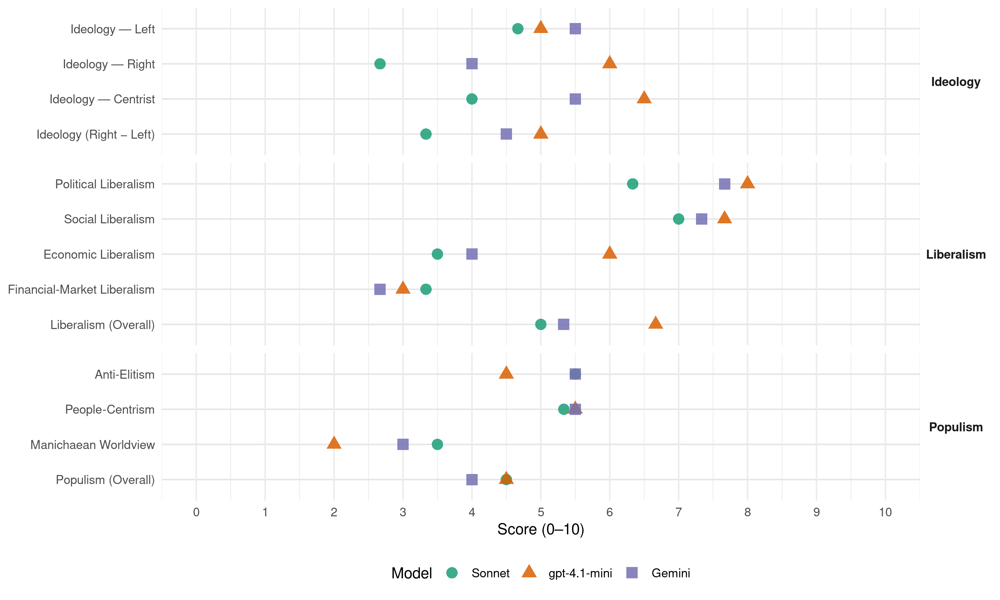

Sp (Norway, 1993)
manifesto_id 12810_199309
Get full text: This site shows derived annotations and short verbatim quotes only. The full manifesto text is © Manifesto Project / WZB — obtain it via manifesto-project.wzb.eu using the manifesto_id above.
Headline scores
| Dimension | Sonnet | gpt-4.1-mini | Gemini |
|---|---|---|---|
| Populism (Overall) | 4.5 | 4.5 | 4.0 |
| Anti-Elitism | 5.5 | 4.5 | 5.5 |
| People-Centrism | 5.3 | 5.5 | 5.5 |
| Manichaean Worldview | 3.5 | 2.0 | 3.0 |
| Ideology (Right − Left) | 3.3 | 5.0 | 4.5 |
| Liberalism (Overall) | 5.0 | 6.7 | 5.3 |
| Political Liberalism | 6.3 | 8.0 | 7.7 |
| Social Liberalism | 7.0 | 7.7 | 7.3 |
| Economic Liberalism | 3.5 | 6.0 | 4.0 |
| Financial-Market Liberalism | 3.3 | 3.0 | 2.7 |
Evidence per dimension
Economic Liberalism
Gemini · score 5.0 · verified · chunk 1
“blandingsøkonomi * privat eiendomsrett”
frihet for enkeltmennesket, med ansvar for seg selv og fellesskapet * blandingsøkonomi * privat eiendomsrett Senterpartiet ser hjem og familie som
Gemini · score 4.0 · verified · chunk 2
“undergis offentlig innsyn og kontroll”
Senterpartiet går inn for at dette området undergis offentlig innsyn og kontroll, og at det utformes et strengt lovverk
Gemini · score 3.0 · verified · chunk 3
“kan ikke utviklingen overlates til markedskreftene”
Skal vi sikre viktige samfunnsinteresser, kan ikke utviklingen overlates til markedskreftene. Dersom viktige
gpt-4.1-mini · score 6.0 · verified · chunk 1
“samspill mellom offentlig innsats og det private initiativ”
Senterpartiet mener en god samfunnsutvikling best kan sikres gjennom samspill mellom offentlig innsats og det private initiativ, gjennom en rettferdig fordelingspolitikk og personlig frihet.
gpt-4.1-mini · score 6.0 · verified · chunk 2
“kostnader ved håndtering av spesialavfall legges på produktprisen”
Senterpartiet går inn for at: * kostnader ved håndtering av spesialavfall legges på produktprisen. * prinsippet om nærhet til kilden legges til grunn for behandling av avfall. * atomreaktoren i Halden legges ned.
gpt-4.1-mini · score 6.0 · verified · chunk 3
“markedsøkonomien kombineres med beslutninger truffet av folkevalgte”
Skal vi sikre viktige samfunnsinteresser, kan ikke utviklingen overlates til markedskreftene. Dersom viktige politiske målsettinger skal ivaretas, må markedsøkonomien kombineres med beslutninger truffet av folkevalgte på ulike nivåer.
Sonnet · score 3.0 · verified · chunk 1
“Markedsliberalismen må avvises som virkemiddel”
Gjennomføringen av Senterpartiets økonomiske mål forutsetter politisk styring. Markedsliberalismen må avvises som virkemiddel i vår framtidige økonomiske politikk.
Sonnet · score 5.0 · mixed · chunk 2
“forvaltningen av landets vannkraftressurser fortsatt skal være et offentlig ansvar”
at forvaltningen av landets vannkraftressurser fortsatt skal være et offentlig ansvar. Dette må gjelde både vannkraftressursene, energiproduksjon og overføringsnett.
Sonnet · score 4.0 · verified · chunk 3
“kan ikke utviklingen overlates til markedskreftene”
Skal vi sikre viktige samfunnsinteresser, kan ikke utviklingen overlates til markedskreftene. Dersom viktige politiske målsettinger skal ivaretas, må markedsøkonomien kombineres med beslutninger truffet av folkevalgte
Financial-Market Liberalism
Gemini · score 3.0 · verified · chunk 1
“innføre valutarestriksjoner for å kontrollere”
forhindre uheldige oppkjøp og “slakting” av norske bedrifter. * at myndighetene kan innføre valutarestriksjoner for å kontrollere og styre kapitalstrømmene over landegrensene.
Gemini · score 3.0 · verified · chunk 2
“skjerpe bankenes informasjonsplikt om reell rente”
åpner for finansiering av kjøp og istandsetting av brukt bolig. * å skjerpe bankenes informasjonsplikt om reell rente på lån. * at Landbruksbanken også må
Gemini · score 2.0 · verified · chunk 3
“forbud mot å bruke opplysninger om DNA”
utdannings- og kredittinstitusjoner, forsikringsselskaper og andre institusjoner som har behov for helseopplysninger. Det må være forbud mot å bruke opplysninger om DNA
gpt-4.1-mini · score 3.0 · verified · chunk 1
“myndighetene kan innføre valutarestriksjoner for å kontrollere og styre kapitalstrømmene”
Myndighetene kan innføre valutarestriksjoner for å kontrollere og styre kapitalstrømmene over landegrensene. Myndighetene beholder retten til endelige vedtak om rentenivå i Norges Bank og om den norske kronens tilknytning til andre valutaer.
Sonnet · score 2.0 · verified · chunk 1
“myndighetene kan innføre valutarestriksjoner”
at myndighetene kan innføre valutarestriksjoner for å kontrollere og styre kapitalstrømmene over landegrensene.
Sonnet · score 5.0 · verified · chunk 2
“skjerpe bankenes informasjonsplikt om reell rente”
å skjerpe bankenes informasjonsplikt om reell rente på lån.
Sonnet · score 3.0 · verified · chunk 3
“fri flyt av arbeidskraft, kapital, varer”
Stordriftsfordelene av et stort felles marked med fri flyt av arbeidskraft, kapital, varer og tjenester, skal øke konkurranseevnen overfor USA og Japan. EF forsterker den utviklingen som har skapt miljøkrisa.
Political Liberalism
Gemini · score 8.0 · verified · chunk 1
“styrke vårt demokratiske styresett”
ta vare på vår nasjonale arv, vårt livsmiljø og styrke vårt demokratiske styresett. Målet for Senterpartiets politikk er
Gemini · score 7.0 · verified · chunk 2
“beholde allmenn stemmerett i skolemålssaker”
obligatorisk undervisning i sidemål. Senterpartiet går inn for å beholde allmenn stemmerett i skolemålssaker. Nynorske læremidler må sikres nok ressurser
Gemini · score 8.0 · verified · chunk 3
“sikre at rettsstatens prinsipper blir overholdt”
sentrale politiske mål og for å sikre at rettsstatens prinsipper blir overholdt, bl.a. i saksbehandlingen
gpt-4.1-mini · score 8.0 · verified · chunk 1
“styrke vårt demokratiske styresett”
Senterpartiet vil at Norge skal bygge sin framtid på de kristne grunnverdier og humanistiske verdier i pakt med disse. Vi skal ta vare på vår nasjonale arv, vårt livsmiljø og styrke vårt demokratiske styresett.
gpt-4.1-mini · score 8.0 · verified · chunk 2
“full lik rett til utdanning”
Retten til fullverdig utdanning skal være lik for alle, uansett sosial bakgrunn, bosted og økonomisk evne. Derfor er utdanning først og fremst et nasjonalt ansvar og en offentlig oppgave. Utdanning skal hjelpe elevene til utvikle evner og interesser, selvstendige holdninger og styrke enkeltindividets posisjon i samfunnet. Elevene skal gis kunnskaper og ferdigheter som kvalifiserer dem for et meningsfylt og aktivt samfunnsliv. Barn og ungdom vil møte sterke krav til omstilling i sitt voksne liv, derfor vil kunnskap i basisfag som norsk, matematikk, fremmedspråk og naturfag være viktig. Elevene må få mer ansvar for egen læring. Skolens arbeidsmåter og organisering av undervisningen må bære preg av dette. Det er viktig at miljøet rundt elevene utgjør en helhet. Det må derfor være et nært samarbeid mellom hjem og skole. Foreldrene må ta sin del av ansvaret for opplæringen. En sentral fellesoppgave for hjem og skole er formidling av våre kristne grunnverdier og humanistiske verdier i pakt med disse, og våre nasjonale kulturtradisjoner.
gpt-4.1-mini · score 8.0 · verified · chunk 3
“folkestyre må være grunnleggende i det internasjonale samarbeidet”
Respekten for folkestyret må være grunnleggende i det internasjonale samarbeidet. Mangfoldet av grupper og folkeslag må være representert i samarbeidet. Tendensene til maktkonsentrasjon og elitestyre må motarbeides.
Sonnet · score 7.0 · verified · chunk 1
“styrke vårt demokratiske styresett”
Vi skal ta vare på vår nasjonale arv, vårt livsmiljø og styrke vårt demokratiske styresett.
Sonnet · score 6.0 · verified · chunk 2
“Internasjonale domstoler må ha mulighet”
et traktatfestet forbud mot økning av grenseoverskridede forurensning. Internasjonale domstoler må ha mulighet til å fastsette erstatningsansvar for forurensing av andre land.
Sonnet · score 6.0 · verified · chunk 3
“demokratiske rettigheter, må omgivelsene være oversiktlige”
Skal folk føle ansvar og kunne utøve sine demokratiske rettigheter, må omgivelsene være så oversiktlige at folk finner det meningsfullt å engasjere seg.
Liberalism (Overall)
Gemini · score 6.0 · verified · chunk 1
“blandingsøkonomi * privat eiendomsrett”
frihet for enkeltmennesket, med ansvar for seg selv og fellesskapet * blandingsøkonomi * privat eiendomsrett Senterpartiet ser hjem og familie som
Gemini · score 5.0 · verified · chunk 2
“beholde allmenn stemmerett i skolemålssaker”
obligatorisk undervisning i sidemål. Senterpartiet går inn for å beholde allmenn stemmerett i skolemålssaker. Nynorske læremidler må sikres nok ressurser
Gemini · score 5.0 · verified · chunk 3
“sikre at rettsstatens prinsipper blir overholdt”
sentrale politiske mål og for å sikre at rettsstatens prinsipper blir overholdt, bl.a. i saksbehandlingen
gpt-4.1-mini · score 6.0 · verified · chunk 1
“styrke vårt demokratiske styresett”
Senterpartiet vil at Norge skal bygge sin framtid på de kristne grunnverdier og humanistiske verdier i pakt med disse. Vi skal ta vare på vår nasjonale arv, vårt livsmiljø og styrke vårt demokratiske styresett.
gpt-4.1-mini · score 7.0 · verified · chunk 2
“Retten til fullverdig utdanning skal være lik for alle”
Retten til fullverdig utdanning skal være lik for alle, uansett sosial bakgrunn, bosted og økonomisk evne. Derfor er utdanning først og fremst et nasjonalt ansvar og en offentlig oppgave. Utdanning skal hjelpe elevene til utvikle evner og interesser, selvstendige holdninger og styrke enkeltindividets posisjon i samfunnet.
gpt-4.1-mini · score 7.0 · verified · chunk 3
“markedsøkonomien kombineres med beslutninger truffet av folkevalgte”
Skal vi sikre viktige samfunnsinteresser, kan ikke utviklingen overlates til markedskreftene. Dersom viktige politiske målsettinger skal ivaretas, må markedsøkonomien kombineres med beslutninger truffet av folkevalgte på ulike nivåer.
Sonnet · score 5.0 · verified · chunk 1
“styrke vårt demokratiske styresett”
Vi skal ta vare på vår nasjonale arv, vårt livsmiljø og styrke vårt demokratiske styresett.
Sonnet · score 5.0 · mixed · chunk 2
“lik rett til utdanning”
Retten til fullverdig utdanning skal være lik for alle, uansett sosial bakgrunn, bosted og økonomisk evne. Rene kommersielle skoletilbud er ikke i tråd med Senterpartiets målsetting om lik rett til utdanning.
Sonnet · score 5.0 · verified · chunk 3
“markedsøkonomien kombineres med beslutninger”
Dersom viktige politiske målsettinger skal ivaretas, må markedsøkonomien kombineres med beslutninger truffet av folkevalgte på ulike nivåer.
Anti-Elitism
Gemini · score 7.0 · verified · chunk 1
“motvekt til makteliten og markedskreftenes”
representanter for folket fatter de viktige beslutningene, som en motvekt til makteliten og markedskreftenes frie spill. Sentralstyrte og byråkratiske
Gemini · score 4.0 · verified · chunk 3
“kun skal legimitere maktelitene”
og ikke et minimumsdemokrati som kun skal legimitere maktelitene. Globalt økologisk
gpt-4.1-mini · score 7.0 · verified · chunk 1
“demme opp mot sentralisering av makt og kapital”
Senterpartiet vil redusere avstanden mellom de som styrer og de som blir styrt. Det er viktig å demme opp mot sentralisering av makt og kapital, for å unngå at et fåtall personer fatter de viktigste beslutningene i samfunnet.
gpt-4.1-mini · score 2.0 · verified · chunk 3
“markedskreftenes manglende evne til å ivareta fordelingshensyn”
Det store antallet arbeidsledige og det økende antallet fattige i EF, viser markedskreftenes manglende evne til å ivareta fordelingshensyn. Konkurransen mellom handelsblokkene EF, USA og Japan er i dag drivkraften i verdensøkonomien, og den gjør kløften mellom rike og fattige land dypere.
Sonnet · score 5.0 · verified · chunk 1
“motvekt til makteliten og markedskreftenes frie spill”
Vi vil ha et aktivt folkestyre, der mange deltar og valgte representanter for folket fatter de viktige beslutningene, som en motvekt til makteliten og markedskreftenes frie spill.
Sonnet · score 6.0 · verified · chunk 3
“maktkonsentrasjon og elitestyre må motarbeides”
Tendensene til maktkonsentrasjon og elitestyre må motarbeides. Et reelt folkestyre krever organisering innenfor mindre enheter.
Ideology — Centrist
Gemini · score 5.0 · verified · chunk 1
“desentralisering av makt, kapital og bosetting”
Viktige grunnpilarer i Senterpartiets ideologi er * desentralisering av makt, kapital og bosetting * et samfunn i økologisk balanse
Gemini · score 6.0 · verified · chunk 3
“desentralisering av beslutningsmyndighet er et bærende”
prosessene. Desentralisering av beslutningsmyndighet er et bærende prinsipp i Senterpartiets
gpt-4.1-mini · score 8.0 · verified · chunk 1
“folkestyre, der mange deltar og valgte representanter”
Vi vil ha et aktivt folkestyre, der mange deltar og valgte representanter for folket fatter de viktige beslutningene, som en motvekt til makteliten og markedskreftenes frie spill.
gpt-4.1-mini · score 5.0 · verified · chunk 3
“folk flest må ha mulighet til å være med og formulere egne problemer”
Et reelt folkestyre krever organisering innenfor mindre enheter. Folk flest må ha mulighet til å være med og formulere egne problemer og finne de beste løsningene. Etter Senterpartiets syn er deltakerdemokratiet den eneste forsvarlige måten å organisere et samfunn på.
Sonnet · score 4.0 · verified · chunk 1
“desentralisering av makt, kapital og bosetting”
Viktige grunnpilarer i Senterpartiets ideologi er * desentralisering av makt, kapital og bosetting
Sonnet · score 4.0 · verified · chunk 3
“desentralisering og aktivt folkestyre”
en samarbeidsmodell som bygger på et desentralisering og aktivt folkestyre, en økologisk bevisst forbrukerpolitikk
Ideology — Left
Gemini · score 6.0 · verified · chunk 1
“rettferdig fordeling av ressursene og utjevning”
Rettferdig fordeling Senterpartiet arbeider for en rettferdig fordeling av ressursene og utjevning av inntektene. Vi må unngå å
Gemini · score 5.0 · verified · chunk 3
“utjevning mellom fattig og rik”
Senterpartiet ser utjevning mellom fattig og rik som den viktigste forutsetningen
gpt-4.1-mini · score 7.0 · verified · chunk 1
“rettferdig fordeling mellom rike og fattige i verden”
Senterpartiet vil arbeide for en mer rettferdig fordeling mellom rike og fattige i verden. Arbeidet for å sikre menneskerettighetene for alle må være grunnleggende i norsk innenriks- og utenrikspolitikk.
gpt-4.1-mini · score 3.0 · verified · chunk 3
“utjevning mellom fattig og rik som den viktigste forutsetningen”
Senterpartiet ser utjevning mellom fattig og rik som den viktigste forutsetningen for å løse globale problemer og for å forebygge konflikter og sosial uro. Markedsøkonomien er et uttrykk for verdens maktkonstellasjoner.
Sonnet · score 6.0 · verified · chunk 1
“rettferdig fordeling av ressursene og utjevning av inntektene”
Senterpartiet arbeider for en rettferdig fordeling av ressursene og utjevning av inntektene.
Sonnet · score 3.0 · verified · chunk 2
“lik rett til utdanning”
Retten til fullverdig utdanning skal være lik for alle, uansett sosial bakgrunn, bosted og økonomisk evne. Derfor er utdanning først og fremst et nasjonalt ansvar og en offentlig oppgave.
Sonnet · score 5.0 · verified · chunk 3
“utjevning mellom fattig og rik”
Senterpartiet ser utjevning mellom fattig og rik som den viktigste forutsetningen for å løse globale problemer og for å forebygge konflikter og sosial uro.
Ideology (Right − Left)
Gemini · score 5.0 · verified · chunk 1
“desentralisering av makt, kapital og bosetting”
Viktige grunnpilarer i Senterpartiets ideologi er * desentralisering av makt, kapital og bosetting * et samfunn i økologisk balanse
Gemini · score 4.0 · verified · chunk 3
“desentralisering av beslutningsmyndighet er et bærende”
prosessene. Desentralisering av beslutningsmyndighet er et bærende prinsipp i Senterpartiets
gpt-4.1-mini · score 7.0 · verified · chunk 1
“rettferdig fordeling mellom rike og fattige i verden”
Senterpartiet vil arbeide for en mer rettferdig fordeling mellom rike og fattige i verden. Arbeidet for å sikre menneskerettighetene for alle må være grunnleggende i norsk innenriks- og utenrikspolitikk.
gpt-4.1-mini · score 3.0 · verified · chunk 3
“markedskreftenes manglende evne til å ivareta fordelingshensyn”
Det store antallet arbeidsledige og det økende antallet fattige i EF, viser markedskreftenes manglende evne til å ivareta fordelingshensyn. Konkurransen mellom handelsblokkene EF, USA og Japan er i dag drivkraften i verdensøkonomien, og den gjør kløften mellom rike og fattige land dypere.
Sonnet · score 4.0 · verified · chunk 1
“rettferdig fordeling av ressursene og utjevning”
Senterpartiet arbeider for en rettferdig fordeling av ressursene og utjevning av inntektene.
Sonnet · score 2.0 · verified · chunk 2
“Innvandringsstoppen må derfor opprettholdes”
Innvandringen til Norge må fortsatt være begrenset og kontrollert. Innvandringsstoppen må derfor opprettholdes.
Sonnet · score 4.0 · verified · chunk 3
“makten må desentraliseres”
Skal en komme ut av denne onde sirkelen, mener Senterpartiet at makten må desentraliseres. Uønskede resultater kan lettere korrigeres i mindre enheter.
Ideology — Right
Gemini · score 4.0 · verified · chunk 1
“ta vare på vår nasjonale arv”
humanistiske verdier i pakt med disse. Vi skal ta vare på vår nasjonale arv, vårt livsmiljø og styrke vårt demokratiske
gpt-4.1-mini · score 6.0 · verified · chunk 1
“ta vare på vår nasjonale arv”
Senterpartiet vil at Norge skal bygge sin framtid på de kristne grunnverdier og humanistiske verdier i pakt med disse. Vi skal ta vare på vår nasjonale arv, vårt livsmiljø og styrke vårt demokratiske styresett.
Sonnet · score 3.0 · verified · chunk 1
“nasjonal råderett over naturressursene”
Senterpartiet vil sikre nasjonal råderett over naturressursene. Oljeutvinningstempoet må flates ut og reduseres.
Sonnet · score 2.0 · verified · chunk 2
“Innvandringsstoppen må derfor opprettholdes”
Innvandringen til Norge må fortsatt være begrenset og kontrollert. Innvandringsstoppen må derfor opprettholdes.
Sonnet · score 3.0 · verified · chunk 3
“råderett over egne naturressurser”
Råderett over egne naturressurser og beskyttelse av og kontroll over egen sysselsetting må være en forutsetning.
Manichaean Worldview
Gemini · score 3.0 · verified · chunk 1
“oppgjør med likegyldighet og skjebnetro”
Det er mulig! Senterpartiet mener det er mulig for folk å påvirke og forme sin egen framtid og utviklingen i samfunnet. Vi vil derfor ta et oppgjør med likegyldighet og skjebnetro. Gjennom aktiv deltagelse kan vi
gpt-4.1-mini · score 5.0 · mixed · chunk 1
“kløften mellom fattig og rik øker”
Vi kan ikke akseptere en utvikling hvor kløften mellom fattig og rik øker. Dette gjelder internasjonalt og i Norge.
gpt-4.1-mini · score 2.0 · verified · chunk 3
“markedskreftenes manglende evne til å ivareta fordelingshensyn”
Det store antallet arbeidsledige og det økende antallet fattige i EF, viser markedskreftenes manglende evne til å ivareta fordelingshensyn. Konkurransen mellom handelsblokkene EF, USA og Japan er i dag drivkraften i verdensøkonomien, og den gjør kløften mellom rike og fattige land dypere.
Sonnet · score 3.0 · verified · chunk 1
“kløften mellom fattig og rik øker”
Vi kan ikke akseptere en utvikling hvor kløften mellom fattig og rik øker. Dette gjelder internasjonalt og i Norge.
Sonnet · score 4.0 · verified · chunk 3
“ikke et minimumsdemokrati som kun skal legimitere maktelitene”
Vi ønsker et virkelig deltakerdemokrati, og ikke et minimumsdemokrati som kun skal legimitere maktelitene.
People-Centrism
Gemini · score 6.0 · verified · chunk 1
“redusere avstanden mellom de som styrer”
Folkestyre Senterpartiet vil redusere avstanden mellom de som styrer og de som blir styrt. Det er
Gemini · score 5.0 · verified · chunk 3
“folkestyre innebærer innflytelse for de mange”
FOLKESTYRE OG DESENTRALISERING Folkestyre innebærer innflytelse for de mange og spredning av makt
gpt-4.1-mini · score 8.0 · verified · chunk 1
“et solidarisk fellesskap av frie, selvstendige mennesker”
Målet for Senterpartiets politikk er å skape et solidarisk fellesskap av frie, selvstendige mennesker der rettferdighet, trygghet og likeverd er bærende prinsipper.
gpt-4.1-mini · score 3.0 · verified · chunk 3
“folk flest må ha mulighet til å være med og formulere egne problemer”
Et reelt folkestyre krever organisering innenfor mindre enheter. Folk flest må ha mulighet til å være med og formulere egne problemer og finne de beste løsningene. Etter Senterpartiets syn er deltakerdemokratiet den eneste forsvarlige måten å organisere et samfunn på.
Sonnet · score 6.0 · verified · chunk 1
“aktiv og bred deltakelse fra folk”
I et samfunn med aktiv og bred deltakelse fra folk vil en lettere unngå maktkonsentrasjon og ensretting.
Sonnet · score 3.0 · verified · chunk 2
“folk et rikere liv gjennom mulighet”
Siktemålet med kulturpolitikken må være å gi folk et rikere liv gjennom mulighet til opplevelse og egenaktivitet.
Sonnet · score 7.0 · verified · chunk 3
“Folkestyre innebærer innflytelse for de mange”
FOLKESTYRE OG DESENTRALISERING Folkestyre innebærer innflytelse for de mange og spredning av makt, i motsetning til ekspertstyre og maktkonsentrasjon.
Populism (Overall)
Gemini · score 5.0 · verified · chunk 1
“motvekt til makteliten og markedskreftenes”
representanter for folket fatter de viktige beslutningene, som en motvekt til makteliten og markedskreftenes frie spill. Sentralstyrte og byråkratiske
Gemini · score 3.0 · verified · chunk 3
“folkestyre innebærer innflytelse for de mange”
FOLKESTYRE OG DESENTRALISERING Folkestyre innebærer innflytelse for de mange og spredning av makt
gpt-4.1-mini · score 7.0 · verified · chunk 1
“demme opp mot sentralisering av makt og kapital”
Senterpartiet vil redusere avstanden mellom de som styrer og de som blir styrt. Det er viktig å demme opp mot sentralisering av makt og kapital, for å unngå at et fåtall personer fatter de viktigste beslutningene i samfunnet.
gpt-4.1-mini · score 2.0 · verified · chunk 3
“markedskreftenes manglende evne til å ivareta fordelingshensyn”
Det store antallet arbeidsledige og det økende antallet fattige i EF, viser markedskreftenes manglende evne til å ivareta fordelingshensyn. Konkurransen mellom handelsblokkene EF, USA og Japan er i dag drivkraften i verdensøkonomien, og den gjør kløften mellom rike og fattige land dypere.
Sonnet · score 4.0 · verified · chunk 1
“motvekt til makteliten og markedskreftenes frie spill”
Vi vil ha et aktivt folkestyre, der mange deltar og valgte representanter for folket fatter de viktige beslutningene, som en motvekt til makteliten og markedskreftenes frie spill.
Sonnet · score 5.0 · verified · chunk 3
“spredning av makt, i motsetning til ekspertstyre”
Folkestyre innebærer innflytelse for de mange og spredning av makt, i motsetning til ekspertstyre og maktkonsentrasjon.
Social Liberalism